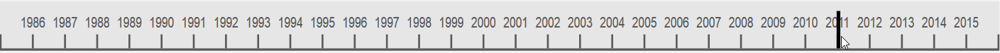
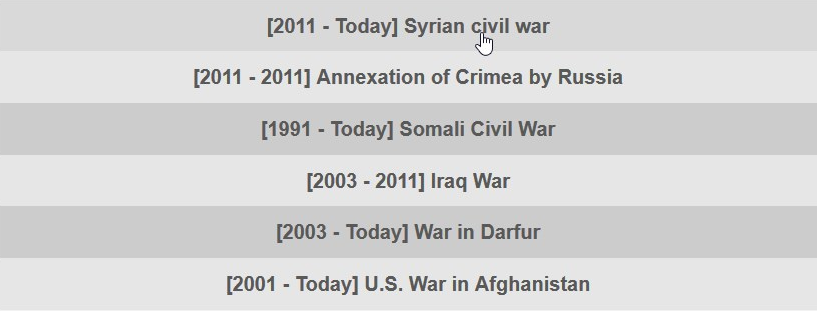
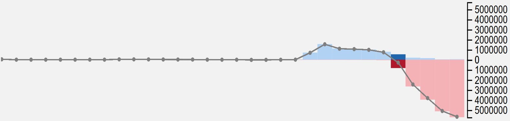
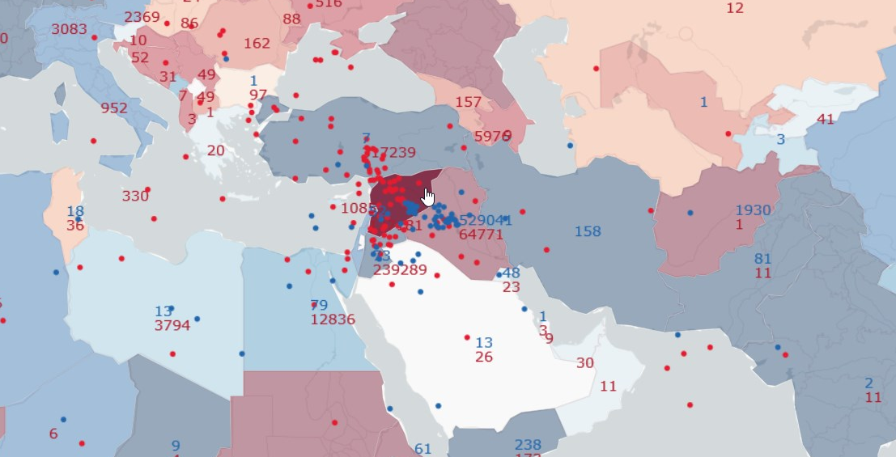

This visualization will provide you with insights about refugee flows and how events such as wars and conflicts influence the migration of populations.
The dataset used to produce this visualization was gathered by the UNHCR and is made available here.

The map contains mainly two visual representations of the data: The choropleth layer and the dynamic flows. The choropleth layer illustrates the net difference between inflows and outflows of refugees. This difference is scaled by the population of the host country. The flows give a feeling about the number of refugees moving in and out of a selected country; the bigger the flow, the higher the number of refugees. A country can be selected by a simple click. You will also see numbers on the map representing in red: the number of refugees from the selected country that went to the country where the number is displayed and in blue the number of refugee that came from the country where the number is displayed to the selected country.

The timeline is the main year-selection tool. You can either click the timeline on the year you wish to visualize or click & drag the cursor.

The graph provides more accurate information about the data in comparison to the map. The bars represent the inflows (blue) and outlfows (red) for the selected country. The line shows the net difference. The current year is highlighted and by sliding over the bars, you will find the exact values from the data. The graph with evolve as you select different countries or different years.

Near the year display, you will find three small buttons. The two surrounding the current year allow you to increase or decrease it by 1. The play button, once clicked, starts an automatic mode where the current year increase periodically; updating the map and the graph in the process.

The list of events gives a non-exhaustive list of events correlated with the movements of refugees for the current year. If you click on an event, the map, the graph and the images will change to show the flows for the event-related country. Double-click on it and you will be brought to the appropriate Wikipedia page.
Only accessible from the list of events, the contextual images are event-related. Clicking on an image will change its size relative to the others.
Now let's use our new tools to get an insight of the gravity of the Syrian civil war. When you launch the visualization, you should have a screen like this:
Start by moving the cursor on the timeline at the start of the conflicts in Syria, in 2011. As stated above, you can do this either by clicking on 2011, or clicking anywhere on the timeline and then dragging the cursor to 2011.
In the list of events, you can see that the event 'Syrian civil war' appeared.
If you click on it, you can see on the map that the flows displayed are now the flows from and to Syria. The graph also changed.
We see that the number of outgoing refugees increases drastically after 2011. Now we can select 2012 to see the evolution of the flow. We see that the flow has already increased a lot. In 2012, the main destination of refugees is Turkey, with 317'239 refugees in 2012 as well as Jordan with 239'289 refugees.
Click on the button below to try it by yourself !
Proceed to the visualization